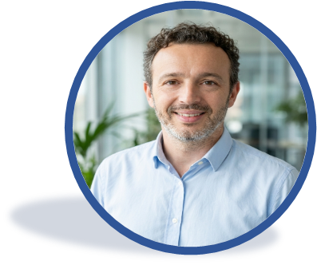

Hola, soy Jesús Luna Ciudad
SOBRE MÍ…
Soy una persona apasionada por la tecnología. Cuento con una extensa trayectoria que une la coordinación técnica en el sector audiovisual con el desarrollo Full-Stack y la arquitectura de soluciones en la nube (M365). Tras años implementando innovación en proyectos corporativos, mi objetivo es enfocarme en mi vocación docente. Apoyado en mi formación pedagógica (CAP), busco trasladar toda esta experiencia real y práctica al aula como profesor de tecnología.

Experiencia Laboral
Analista Desarrollador M365 Modern Workplace
Avanade Iberica | Encamina (2022) | Zertia (2021)
Arquitectura, desarrollo y automatización de soluciones sobre Microsoft 365 y Power Platform. Diseño de intranets corporativas mediante SharePoint (SPFx, React), despliegue de Agentes de IA Generativa con Copilot Studio y digitalización de procesos de negocio críticos integrando ecosistemas conectados (Teams, Graph API, Power Automate).
Responsable Servicio Postventa de sistemas audiovisuales.
Ricoh España
Gestión del servicio postventa de sistemas audiovisuales y videoconferencia a nivel nacional.
Project Manager
Banco Santander (2018-2019) | Banco Popular Español (2017-2018)
Despliegue y puesta en marcha de sistemas audiovisuales y videoconferencia en la sede Santander España y la Nueva Sede de Banco Popular.
Coordinador Técnico de Equipos Audiovisuales
BBVA Telefónica España
Técnico de Soporte en Eventos
BBVA Siemens
Soporte de equipos audiovisuales e informáticos corporativos en eventos de primera línea.
Jefe Técnico y Productor / Locutor
ONDA VIVA Radio (Ayuntamiento de Sonseca)
Técnico de Grabación y Postproducción de Audio
Fundación ONCE
Producciones Freelance
Diseño de infografías y operador de cámara en Productora El Ojo Mecánico. Operador de cámara y ayudante de grúa para Alaska Producciones. Técnico de sonido directo y estudio en Estudio Mostmusic.
Técnico de Hardware y Servicio Postventa
NASH Informática (2000-2002) | Editorial Profesiones (1996-2000)
Formación & Certificaciones
Formación Universitaria
Universidad Complutense de Madrid (UCM)
- Licenciado en Comunicación Audiovisual (1999)
- Certificado de Aptitud Pedagógica (2009)
Máster en Desarrollo de Software FullStack
Colegio Tajamar (850 horas) | 2021
Especialización en ecosistema .NET (C#, .NET Core, EF) y Frontend moderno (React, TypeScript, Blazor). Arquitectura de software, microservicios y gestión de bases de datos SQL Server.
Especialización en IA Generativa & Agéntica
Udacity - Accenture TQ Program | 2026
Agentic AI & Generative AI: Diseño de agentes autónomos y LLMs. AI Powered Productivity & Copilot: Integración en Microsoft 365 y Power Platform.
Certificaciones Cloud & Low-Code
2021 - 2023
- Microsoft Certified: Power Platform App Maker Associate (PL-100)
- Microsoft Certified: Azure Developer Associate (AZ-204)
- Amazon AWS Certified Developer – Associate
Otras Formaciones
BBVA Formación Interna | 2009
Gestión y administración de equipos de videoconferencia y redes. Prácticas CAP en Colegio Público Calatalifa Villaviciosa de Odón.